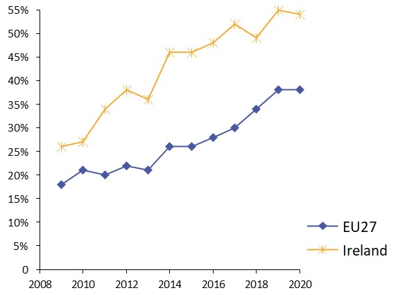
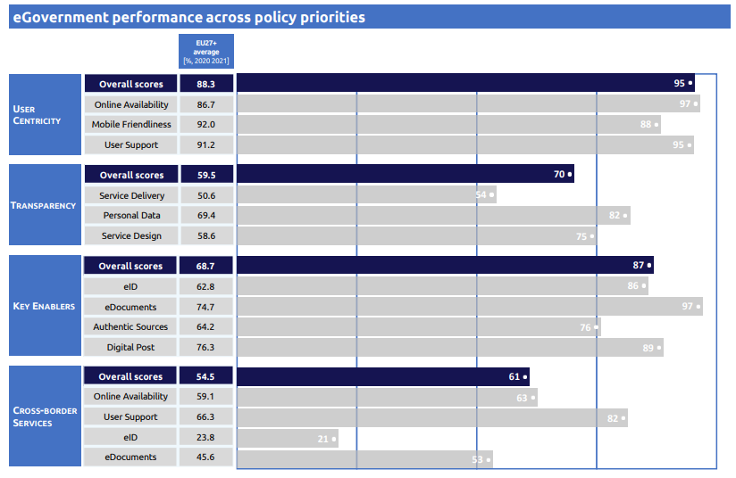
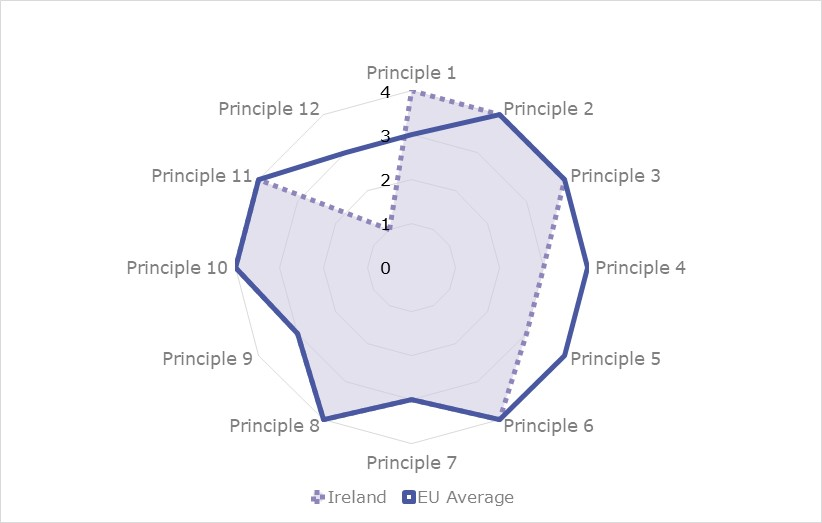

Digital Public Administration factsheet 2021
Ireland
Digital Public Administration Factsheet 2021
Table of Contents
2 Digital Public Administration Highlights 10
3 Digital Public Administration Political Communications 12
4 Digital Public Administration Legislation 21
5 Digital Public Administration Governance 28
6 Digital Public Administration Infrastructure 34
7 Cross border Digital Public Administration Services for Citizens and Businesses 42
Please note that the data collection exercise for the update of the 2021 edition of the Digital Public Administration factsheets took place between March and June 2021. Therefore, the information contained in this document reflects this specific timeframe.
Country
Profile
1
Country Profile
Basic data
Population: 4 985 674 inhabitants (2020)
GDP at market prices: 372 868.5 million Euros (2020)
GDP per inhabitant in PPS (Purchasing Power Standard EU 27=100): 211 (2020)
GDP growth rate: 5.9% (2020)
Inflation rate: -0.5% (2020)
Unemployment rate: 5.7% (2020)
General government gross debt (Percentage of GDP): 59.5% (2020)
General government deficit/surplus (Percentage of GDP): -5% (2020)
Area: 69 797 km2
Capital city: Dublin
Official EU language: Irish (Gaeilge), English
Currency: EUR
Source: Eurostat (last update: 8 February 2021)
Digital Public Administration Indicators
The following graphs present data for the latest Digital Public Administration Indicators for Ireland compared to the EU average. Statistical indicators in this section reflect those of Eurostat at the time the Edition is being prepared.
Percentage of individuals using the internet for interacting with public authorities in Ireland | Percentage of individuals using the internet for obtaining information from public authorities in Ireland |
|
|
Percentage of individuals using the internet for downloading official forms from public authorities in Ireland | Percentage of individuals using the internet for sending filled forms to public authorities in Ireland |
|  |


Interoperability State of Play
In 2017, the European Commission published the European Interoperability Framework (EIF) to give specific guidance on how to set up interoperable digital public services through a set of 47 recommendations. The picture below represents the three pillars of the EIF around which the EIF Monitoring Mechanism was built to evaluate the level of implementation of the EIF within the Member States. It is based on a set of 71 Key Performance Indicators (KPIs) clustered within the three main pillars of the EIF (Principles, Layers and Conceptual model), outlined below.

Source: European Interoperability Framework Monitoring Mechanism 2020

Source: European Interoperability Framework Monitoring Mechanism 2020

Source: European Interoperability Framework Monitoring Mechanism 2020

Source: European Interoperability Framework Monitoring Mechanism 2020
eGovernment State of Play
The graph below presents the main highlights of the latest eGovernment Benchmark Report, an assessment of eGovernment services in 36 countries: the 27 European Union Member States, as well as Iceland, Norway, Montenegro, the Republic of Serbia, Switzerland, Turkey, the United Kingdom, Albania and Macedonia (referred to as the EU27+).
The study evaluates online public services on four dimensions:
- User centricity: indicates the extent to which a service is provided online, its mobile friendliness and its usability (in terms of available online support and feedback mechanisms).
- Transparency: indicates the extent to which governments are transparent about (i) the process of service delivery, (ii) policy making and digital service design processes and (iii) the personal data processed in public services.
- Cross-border services: indicates the extent to which users of public services from another European country can use the online services.
- Key enablers: indicates the extent to which technical and organizational pre-conditions for eGovernment service provision are in place, such as electronic identification and authentic sources.
The 2021 report presents the biennial results, achieved over the past two years of measurement of all eight life events used to measure the above-mentioned key dimensions. More specifically, these life events are divided between six ‘Citizen life events’ (Career, Studying, Family life, measured in 2020, and Starting a small claim procedure, Moving, Owning a car, all measured in 2019) and two ‘Business life events’ (Business start-up, measured in 2020, and Regular business operations, measured in 2019).

Source: eGovernment Benchmark Report 2021 Country Factsheets

Digital Public Administration Highlights
2
Digital Public Administration Highlights
Digital Public Administration Political Communications
The Department of Education announced a consultation process for a new strategy to replace the Digital Strategy for Schools 2015-2020, which expires at the end of the 2020/2021 school year.
An ambition of the Rural Development Policy 2021-2025 policy is to improve digital connectivity for rural communities and enterprises through the delivery of high speed broadband to every part of the country.
Digital Public Administration Legislation
Many pieces of existing legislation apply to digital public administration. Some specific legislation includes the Data Sharing and Governance Act 2019, the Single Digital Gateway Regulation, the eIDAS Regulation and ePrivacy Regulations.
Digital Public Administration Governance
The Office of the Government Chief Information Officer (OGCIO), a division of the Department of Public expenditure and Reform, has the leadership role for the digital agenda across Government. OGCIO works in collaboration with organisations across the Civil and Public Service.
Digital Public Administration Infrastructure
The Department of Public Expenditure and Reform operates the Digital Postbox service which acts as an alternative to the delivery of physical post from various public service bodies. The Digital Postbox provides a safe and secure way for public bodies to communicate with their customers and at the same time reduce costs and paper waste.
For citizens, it provides a safe and efficient digital option, to receive post from Government bodies quickly, to get notifications, and then to access their electronic post from anywhere at any time.
Digital Public Administration Political Communications
3
Digital Public Administration Political Communications
Specific political communications on digital public administration
Berlin Declaration on Digital Society and the Value-Based Digital Government
In December 2020, the Irish government signed the Berlin Declaration on Digital Society and Value-Based Digital Government, thus re-affirming its commitment – together with other EU Member States – to foster digital transformation in order to allow citizens and businesses to harness the benefits and opportunities offered by modern digital technologies. The Declaration aims to contribute to a value-based digital transformation by addressing and strengthening digital participation and digital inclusion in European societies.
National Broadband Plan
The key objectives of the plan are:
- to connect schools to broadband in order to ensure that pupils in rural Ireland can fully participate in the digital transformation;
- to ensure that every citizen has internet access via high-speed broadband; and
- to support and promote commercial investment in telecommunications.
New National Digital Strategy
The Minister of the Environment, Climate and Communications announced the development of a new National Digital Strategy in June 2020. The strategy will be a continuation of the first phase of the National Digital Strategy that was launched in July 2013. The new edition aims to respond to the technological changes that have occurred in recent years and address the opportunities and challenges that they present to the Irish society. A public consultation on a new National Digital Strategy was held at the end of 2018, inviting members of the public and interested stakeholders to make submissions that would inform the scope and delivery of the new strategy, which is currently being drafted. The key objectives of the strategy, as outlined in the latest Programme for Government are:
- to utilise the increased level of national connectivity that is being delivered by the National Broadband Plan, particularly in rural Ireland;
- to drive digital transformation in the public service, with greater integration of digital services;
- to further develop Ireland’s leadership in new digital technologies, including cloud computing, data analytics, blockchain, Internet of Things and artificial intelligence (AI);
- to direct the Office of Government Procurement (OGP) to support the adoption of new technologies through the development of new public service frameworks; and
- to explore how Ireland can be at the forefront of protecting citizens’ rights with respect to facial recognition technology, access to encryption tools, and net neutrality.
National Cybersecurity Strategy
The Minister of Environment, Climate and Communications published a new National Cybersecurity Strategy in December 2019. The strategy sets out the framework which will secure the resilient, safe and secure operation of computer networks and associated infrastructure used by the State, Irish citizens and businesses. The key objectives of the strategy are:
- to ensure the State can respond to and manage cybersecurity incidents, including those with a national security component;
- to protect critical national infrastructure from cyberattacks and manage any disruption to services as a result of such attacks;
- to develop the cybersecurity sector in Ireland: more than 6 000 people are employed in the cybersecurity sector in Ireland and the country is well placed to expand this further;
- to work internationally to ensure Ireland has access to the best technology and measures available; and
- to increase skills and awareness among enterprise and private individuals around cybersecurity.
GovTech Report
In November 2019, the Minister for Public Expenditure and Reform released the Cruinniú GovTech Report which sets out the ambitions and goals of the Irish government in the years to come and identifies indicators to measure progress. The fifth priority highlighted by the report is the delivery of digital services, the continuous development of employee skills and the adoption of innovation. Following government approval, the Minister for Public Expenditure and Reform announced plans for prioritising digital transformation within the public service in 2020. The aim is to continue the promotion and acceleration of the digital dimension to modernise and streamline government eServices in 2020.
eGovernment Strategy
- develop a Digital Service Gateway;
- maintain an overall digital programme overseen by the Minister responsible for eGovernment;
- develop existing eID capability;
- develop similar plans to facilitate business and location identification;
- enhance data-sharing capability;
- introduce legislation to support data-sharing ambitions;
- continue to develop the Open Data Portal;
- transform the ‘back office’, i.e. simplify processes and infrastructure to facilitate better, more cohesive and more cost-effective delivery of government services;
- ensure appropriate governance is in place; and
- ensure people have the skills and capabilities to help move the programme forward.
Our Public Service
Our Public Service 2020, published in December 2017, is the new framework to drive development and innovation in the Irish public service. This new phase of public service reform will focus on supporting sustainable and continuous progress across the public service, aiming to build a stronger, more agile public service and to deliver better quality services to the Irish public.
The framework is built across three pillars and includes both new initiatives and actions that build on reforms already in place. These are:
- delivering for Our Public;
- innovating for Our Future; and
- developing Our People and Organisations.
The development of digital services and eGovernment is central to the ‘Delivering for Our Public’ pillar and is seen as key to improving service delivery, as are making better use of data and sharing data more effectively between organisations.
The implementation of the framework began in 2018.
A new renewal strategy is due to be published in early 2021.
Public Service Information and Commication Technology Strategy
The Public Service Information and Communication Technology (ICT) Strategy developed by the Office of the Government Chief Information Officer (OGCIO) in collaboration with the Public Service Chief Information Officer (CIO) Council was approved by the government and published in January 2015. The strategy set out the government’s overall approach to ICT and contained a series of principles to ensure momentum was maintained in this area.
The Public Service ICT Strategy set out a high-level vision to reinforce ICT’s role in supporting public service reform and transformation, identifying a number of key strategic objectives that will set the future direction for innovation and excellence in ICT within the public service:
- build to share: creating ICT shared services to support integration across the wider public service to drive efficiency, standardisation, consolidation and reduction in duplication and control cost;
- digital first: digitisation of key transactional services and increased use of ICT to deliver improved efficiency within public bodies and provide new digital services to citizens, businesses and public servants;
- data as an enabler: facilitating increased data sharing and innovative use of data across all public bodies, in line with statutory obligations and data protection guidelines, to enable the delivery of integrated services, improve decision making and improve openness and transparency between government and the public;
- improve governance: ensuring that the ICT Strategy is aligned, directed and monitored across public bodies to support the specific goals and objectives at a whole-of-government level and with an emphasis on shared commitment; and
- increase capability: ensuring the necessary ICT skills and resources are available to meet the current and future ICT needs of the public service.
Work is underway to develop a new Digital Public Service Strategy which will replace the existing Public Service ICT Strategy and the eGovernment Strategy. It is expected to be published mid-2021.
Interoperability
Public Service Data Strategy
The Public Service Data Strategy for the period 2019–2023 was published in December 2018, providing a detailed vision with a set of goals and actions to deliver a more joined-up whole-of-government approach to how data is used and managed within the public service. The strategy aimed to put in place a series of measures to improve how data is governed, managed and re-used in a secure, efficient and transparent manner, for the benefit of citizens, businesses and policy makers.
Its implementation will put government in a better place to respond to service demands in an agile manner by:
- providing more joined-up and integrated, end-to-end digital services;
- ensuring better processes for policy formulation and evaluation;
- improving protection and transparency of personal data processing; and
- reducing administration by cutting the need for businesses and citizens to provide the same data over and over again.
Key enablers
Access to public information
Open Data Strategy
A new Open Data Strategy for the period 2017–2022 was published in July 2017. This strategy built on achievements made since the launch of the Open Data Initiative in 2014. Its two core objectives are: firstly, the publication of high-value government data in open format, making it publicly available and freely reusable; secondly, engaging with a broad community of stakeholders to promote its social and economic benefits. The strategy sets out seven strategic themes which will guide the Open Data Initiative over the lifetime of the strategy:
- broaden the range of public bodies actively engaged in the Open Data Initiative – the ‘Open Data Providers’;
- broaden the scope and improve the quality, quantity and range of open data and associated metadata (to be used internally and made available to the public), and improve the quality and range of services provided through the national Open Data Portal;
- continue to engage with all stakeholders and encourage the use of open data;
- support and encourage various groups of open data users;
- provide a framework to support and train all data providers and build capacity in the management and use of open data;
- evaluate the impact, benefits and risks of the Open Data Initiative and benchmark against other jurisdictions; and
- ensure that effective governance structures are in place to implement the strategy.
Open Government Partnership National Action Plan
An online portal was deployed to reach a wide audience, encourage discussion, and inspire a sense of community. Civic forums were also held for further input and insight from civil society. Feedback and recommended actions were collected and analysed, and then compiled in a first draft that was opened to comments. As a result, the Open Government Partnership was built on continuous engagement with the public and civil society.
The Action Plan comprised 18 commitments across four main themes:
- increased citizen engagement, to improve policies and services;
- increased transparency, to better understand government activities and decisions;
- open data, for transparency and innovation; and
- anti-corruption and strengthened governance and accountability, to ensure integrity in public life.
The National Action Plan has run until the end of June 2018.
The 2020 ‘Programme for Government: Our Shared Future’ includes a commitment to continue and reinvigorate participation by the public sector in the Open Government Partnership.
eID and Trust Services
No political communication has been adopted in this field to date.
Security aspects
National Cybersecurity Strategy
The National Cybersecurity Strategy, published in December 2019, sets out a series of systematic measures designed to protect the nation against cybersecurity threats, develop the cybersecurity sector, and deepen international engagement on the future of the internet. The strategy was informed by the operational experience acquired by the National Cyber Security Centre (NSCS) between 2015 and 2019.
Interconnection of base registries
Public Service Data Strategy
The Public Service Data Strategy 2019–2023 acknowledges the principles and benefits derived from establishing base registries. In particular, it contains a specific action to “develop base registries and the processes required to govern their operation”. The Data Sharing and Governance Act 2019 includes powers to establish base registries.
eProcurement
National Public Procurement Policy Framework
- legislation (directives, regulations);
- government policy (circulars, etc.);
- capital works management framework for public works;
- general procurement guidelines for goods and services; and
- more detailed technical guidelines, template documentation and information notes as issued periodically by the Policy Unit of the Office of Government Procurement (OGP).
The framework sets out the procurement procedures to be followed by government Departments and State bodies under national and EU rules. The framework supports contracting authorities, including the OGP, the four key sectors (health, education, local government and defence), individual Departments, offices, commercial and non-commercial State bodies, and private entities which are subsidised for 50% or more by a public body, when awarding contracts for works, goods and services. It supports and enables public bodies to adopt procedures to meet their public procurement requirements and facilitates compliance with EU and national procurement rules.
Domain-specific political communications
eHealth Strategy
The purpose of the eHealth Strategy is to provide an outline of eHealth and demonstrate how the individual citizen, the Irish healthcare delivery systems – both public and private – and the economy as a whole will benefit from eHealth. Priority areas for initial development include ePrescribing, online referrals and scheduling, Telehealth (particularly relating to the management of chronic disease) and the development of summary patient records.
Knowledge and Information Strategy
Emerging technologies
Research Priority Areas
Declarations on Artificial Intelligence, Blockchain and Innovation Radar
Cryptoassets and Blockchain Technology
- developing a Distributed Ledger Technology (DLT) platform for aircraft leasing;
- integrating new technology and innovation approaches across Ireland’s IFS ecosystem, such as the usage of DLT and blockchain; and
- developing and delivering an MSc in Applied Blockchain (Distributed Ledger Technologies).
In March 2018, the Ministers for Finance and for Public Expenditure and Reform announced the creation of an internal working group (the Intra-Departmental Working Group) to monitor further developments in the areas of virtual currencies and blockchain technology. The aims of the Intra-Departmental Working Group are the following:
- monitoring developments at a global (e.g. Financial Stability Board, Financial Action Task Force and International Monetary Fund) and European level (e.g. European Commission, European Parliament and European Central Bank) in relation to virtual currencies and blockchain, and providing input into the discussions as and when required;
- building knowledge on developments in technology with an aim to identify risks and assess potential economic opportunities for Ireland;
- engaging with subject matter experts across industry, academia and the private sector to help build a dynamic communication flow;
- liaising with other areas of government to assess where involvement might be required;
- considering whether suitable policy recommendations are required;
- assisting in promoting a better understanding of the technology across government; and
- aligning Ireland’s IFS2020 Strategy to foster opportunities in international financial services by building on the country’s strengths
Electronic Exchange of Social Security Information
Disruptive Technologies Innovation Fund
Monitoring of New Developments
Digital Public Administration Legislation
4
Digital Public Administration Legislation
Specific legislation on digital public administration
No legislation has been adopted in this field to date.
Interoperability
Data Sharing and Governance Act
The Data Sharing and Governance Act 2019 was signed into law on 4 March 2019. The act comes in the wake of the General Data Protection Regulation (GDPR) and Data Protection Act 2018 with the aim to clarify and strengthen the data-sharing rights and obligations of public bodies. The act paves the way for more efficient and cost-effective service delivery by public bodies by providing a clear legal basis for the sharing of personal data in certain circumstances. The aim is to reduce the administrative burden associated with the need for individuals to provide their personal data to numerous public bodies. The act allows for the sharing of personal data between public bodies where the sharing is for the performance of a function of either of the public bodies. In addition, the act provides for the establishment of a Personal Data Access Portal that would allow individuals to view their personal data as well as information in relation to any data breaches affecting their personal data and the data-sharing agreements under which their personal data is processed. Besides, the act allows the Minister to designate base registries for use by public bodies so that they can access personal data without having to collect it directly from service users. A base registry will have an owner who must ensure the personal data is accurate and up to date.
Key enablers
Access to public information
Freedom of Information Act
A new Freedom of Information (FOI) Act came into force on 14 October 2014. It provided for the commitments in relation to freedom of information contained in the Programme for Government by removing the main substantive restrictions in the access to official information introduced in 2003, extending FOI to all public bodies — unless specifically exempt in whole or in part — and providing a framework for the extension of FOI to non-public bodies in receipt of significant funding from the Exchequer. The act also provided an opportunity for a necessary consolidation, modernisation and updating of the legislation. The Freedom of Information Acts 1997 and 2003 were repealed under the new act.
European Communities (Re-Use of Public Sector Information) Regulations
In December 2015, the Minister for Public Expenditure and Reform, Mr Brendan Howlin T.D., signed statutory regulations which transposed Directive 2013/37/EU on the re-use of public sector information (PSI) into Irish law, thereby enhancing the rights of Irish citizens and businesses to re-use existing information held by public bodies in new products and services. These enhancements complemented the government’s overall open data agenda, which aimed to encourage public bodies to make available certain types of data and information (for example data on transport, education, crime and environment) for the benefit of those citizens and organisations who wish to make use of it for either commercial or non-commercial purposes.
The text of the recast of the Open Data and Re Use of Public Service Information (PSI) Directive was formally adopted by the European Council in early June 2019 and then published in the Official Journal. The Directive is due to be transposed in Irish law via Statutory Instrument by 17 July, 2021.
Information on the relevant statutory instruments, guidance and licences relating to the re-use of PSI data can be found at https://data.gov.ie/psi.
Single Digital Gateway
Ireland is engaging as required with the Single Digital Gateway Regulation, which has as its main objective the provision of easy online access to single market information, procedures, assistance and advice for citizens and businesses.
eID and Trust Services
eIDAS Regulation
The Regulation on electronic identification and trust services for electronic transactions in the internal market (eIDAS Regulation) does not require separate legislation in Ireland. Ireland is engaging with the regulation as required and Ireland’s trust services infrastructure is nearing completion to be in line with its provisions.
Security aspects
Data Sharing and Governance Act
The purpose of the Data Sharing and Governance Act is to provide a generalised legal basis for the sharing of data between public bodies while also setting out appropriate safeguards under which such sharing can take place. More in detail, the act provides a generalised legal basis for data sharing between public bodies for specific and legitimate purposes, including:
- making public services more seamless by reducing the burden of providing the same information to different public bodies;
- facilitating the effective administration, supervision and control of public services;
- establishing entitlements to public services;
- identifying and correcting erroneous information; and
- evaluating the effectiveness of public services.
In addition, the act includes a number of provisions to ensure better data governance across the public service through:
- the establishment of a Data Governance Board to advise the Minister on data management policy in the public service;
- the ministerial power to issue standards, codes and guidelines (some of which will be legally binding) in respect of data management across the public service; and
- quality assessments of draft Data Sharing Agreements by the Data Governance Board.
Other key provisions include powers to:
- establish base registries that will provide an authentic, authoritative and complete source of basic data about people, businesses and locations for use across the public service;
- issue a Unique Business Identifier Number (UBIN) for the purpose of uniquely identifying any undertaking that has a transaction with a public body, and for the specification of a business information dataset that can be shared by public bodies in the performance of their functions;
- directly share data between public bodies where this is in the public interest and in compliance with data protection law; and
- collect and process public service data to support the administration of public service pension schemes and to facilitate better analysis and evaluation of public service staffing, pay and pensions.
Data Protection Act
The Data Protection Act 2018, signed into law on 24 May 2018, changed the previous data protection framework, established under the Data Protection Acts 1988 and 2003. The new provisions include:
- establishing a new Data Protection Commission as the State’s data protection authority;
- transposing the Law Enforcement Directive (Directive (EU) 2016/680) into national law; and
- giving further effect to the General Data Protection Regulation (GDPR) in areas where Member States have flexibility (for example, the digital age of consent).
General Data Protection Regulation (GDPR)
The Data Protection Act 2018 provided the relevant supporting legislation for the implementation of the General Data Protection Regulation (GDPR). One of the main objectives of the GDPR was to lay down rules relating to the protection of natural persons with regard to the processing of personal data and rules relating to the free movement of personal data.
ePrivacy Regulations
The 2011 ePrivacy Regulations (S.I. No. 336 of 2011 – European Communities (Electronic Communications Networks and Services) (Privacy and Electronic Communications) Regulations of 2011) aim to provide for data protection and privacy connected with electronic communications networks and services and to enhance the security and reliability of such networks and services.
Copyright and Related Rights Act
The Copyright and Related Rights Act reformed Irish copyright and related rights law, bringing it fully into line with the requirements of EU and international law in this area.
eProcurement
Office of Government Procurement
The Office of Government Procurement (OGP) commenced operations in 2014 and together with four key sectors (health, defence, education and local government) has responsibility for sourcing 16 categories of goods and services on behalf of the public service. In addition, the OGP is also responsible for the procurement policy and procedures.
National Public Procurement Policy Framework
The National Public Procurement Policy Framework (NPPPF), revised and published in November 2019, sets out the overarching policy framework for public procurement in Ireland. The framework consists of five strands:
- legislation (directives, regulations);
- government policy (circulars, etc.);
- capital works management framework for public works;
- general procurement guidelines for goods and services; and
- more detailed technical guidelines, template documentation and information notes as issued periodically by the Policy Unit of the OGP.
The framework sets out the procurement procedures to be followed by government Departments and State bodies under national and EU rules. The framework supports contracting authorities, including the OGP, the four key sectors (health, education, local government and defence), individual Departments, offices, commercial and non-commercial State bodies, and private entities subsidised for 50% or more by a public body, when awarding contracts for works, goods and services. It supports and enables public bodies to adopt procedures to meet their public procurement requirements and facilitates compliance with EU and national procurement rules.
The principal EU Directives are:
- Directive 2014/24/EU on public procurement (goods, services and works);
- Directive 2014/25/EU on procurement by entities operating in the water, energy, transport and postal services sectors; and
- Directive 2014/23/EU on the award of concession contracts.
These have been transposed into Irish Law by way of national regulations contained in statutory instruments as follows:
- S.I. No. 284 of 2016 (Regulations);
- S.I. No. 286 of 2016 (Utilities Regulations); and
- S.I. No. 203 of 2017 (Concessions Regulations).
Information on these and all relevant procurement legislation, directives and regulations can be found here.
In 2019, the OGP published an Information Note on the European Single Procurement Document (ESPD). An initiative under the NPPPF, the note explains how the ESPD, a single self-declaration form of suitability, financial status and abilities of a company, is to be used. The ESPD plays a crucial role in the digital transformation of public procurement and makes it easier to participate in public procurement. All public bodies must now issue and accept the ESPD form for all above threshold procurement exercises. Under the EU public procurement directives, the ESPD should be provided exclusively in electronic form (eESPD).
eInvoicing
The OGP is responsible for leading Ireland’s response to the European Directive on eInvoicing in public procurement, together with a steering committee comprising the OGP four key sector partners (health, defence, education and local government). In January 2018, Ireland joined OpenPEPPOL as a Peppol Authority member, signalling the adoption of Peppol (network and specifications) as the national approach for the electronic delivery (eDelivery) of eInvoices in public procurement.
Statutory Instrument 258, in effect from 12 June 2019, transposed the European Directive on eInvoicing (2014/55/EU) in public procurement. The legislation is in line with and does not exceed the scope of the directive and sets out the following:
- a contracting authority or a contracting entity shall, where an electronic invoice complies with the European standard on electronic invoicing (EN-16931) established under the Directive, receive and process the electronic invoice;
- the regulations required central government contracting authorities and entities to be compliant by 18 April 2019;
- the regulations required sub-central contracting authorities and entities to be compliant by 18 April 2020;
- the legal requirement will only apply to invoices that relate to public procurement contracts above EU threshold values; and
- there will be no legal obligation on economic operators to submit invoices electronically in public procurement at this point in time.
The transposition of the European Directive on VAT (2010/45/EU) into Irish Law is set out in the Statutory Instrument 354 published in 2012, effective as of 1 January 2013. This established electronic invoices on an equal footing with paper invoices and incorporated the definition of electronic invoice's processing as the appropriate application of business control to ensure authenticity, integrity and a reliable audit trail of the electronic document.
Interconnection of base registries
Data Sharing and Governance Act
The Data Sharing and Governance Act is key to delivering on public service reform commitments to expand digital delivery of services and make greater use of data. Citizens and businesses can receive better services and public bodies can operate more effectively and efficiently at a lower cost for the Exchequer. More extensive data sharing will also support better policy development and more efficient and effective policy implementation.
Companies Act
The Companies Act of 2014 covers legal provisions for the Business Registry. The act prescribes the provisions for the various types of companies in existence as well as the allowed organisational frameworks they can function within. Furthermore, the act states that registration offices for companies shall be set up in places deemed necessary by the Minister for Public Expenditure and Reform, as well as that each office shall be headed by a Registrar in charge of administering it.
Land and Conveyancing Law Reform Act
The Land and Conveyancing Law Reform Act of 2009 states that the Land Registry has the meaning given to it by section 7 of the Act of 1964, so that the central office shall be in Dublin while local offices are located in every other county in Ireland. In line with this, the central office is the one responsible for registering all land in the State, while the Land Registry as a body comprises the collective of the central and local offices.
Civil Registration Act
The Civil Registration Act of 2004, along with its amendment from 2014, provides separate definitions as to what is understood by registration of births and stillbirths, adoptions, deaths, marriages and divorces. This is mostly due to historical reasons, as separate registries were kept for each of these different life events. For example, ‘Part 3 Registration of Births and Stillbirths’ states: “In this Part, ‘the register’ means, as the context requires, the register of births or the register of stillbirths and cognate words shall be construed accordingly”.
Domain-specific legislation
Electronic Commerce Act
The Electronic Commerce Act became law on 20 September 2000, implementing the EU Directive on a Community framework for electronic signatures (1999/93/EC) and, in part, the EU Directive on electronic commerce (2000/31/EC).
The act provides (with some exceptions) for the legal recognition of electronic signatures, electronic writing and electronic contracts. It authorises the use of encryption and sets the rights and obligations of Certifications Service Providers (CSPs).
European Communities (Directive 2000/31/EC) Regulations
The Minister for Enterprise, Trade and Employment signed the European Communities (Directive 2000/31/EC) Regulations in 2003 with a view to giving effect to those remaining provisions of the EU Directive on electronic commerce (2000/31/EC) which had not been transposed into Irish Law by the Electronic Commerce Act. A number of sections have been updated in the interim.
Emerging technologies
There is no specific legislation in this area; existing laws apply where appropriate.

Digital Public Administration Governance
5
Digital Public Administration Governance
National
Policy
Department of Public Expenditure and Reform
The overall responsibility for eGovernment/digital policy and the provision of central eGovernment infrastructure and services lies with the Department of Public Expenditure and Reform.
Michael McGrath TD Minister for Public Expenditure and Reform Contact details: Department of Public Expenditure and Reform Government Buildings Upper Merrion Street, Dublin 2 Tel.: +353 1 676 75 71 Fax: +353 1 678 99 36 E-mail: minister@per.gov.ie Source: http://per.gov.ie/ |
| Ossian Smyth TD Minister of State at the Department of Public Expenditure and Reform, with responsibility for Public Procurement and eGovernment Contact details: Department of Public Expenditure and Reform Government Buildings Upper Merrion Street, Dublin 2 Tel.: +353 1 676 75 71 Fax: +353 1 678 99 36 E-mail: ossian.smyth@per.gov.ie Source: http://per.gov.ie/ |

| Barry Lowry Government Chief Information Officer Contact details: Department of Public Expenditure and Reform Government Buildings Upper Merrion Street, Dublin 2, Tel.: +353 1 676 75 71 Fax: +353 1 678 99 36 E-mail: barry.lowry@per.gov.ie Source: http://per.gov.ie/ |

Coordination
Department of Public Expenditure and Reform
Implementation
Government Departments and Agencies
Individual government Departments and agencies are responsible for developing specific eGovernment/digital plans in relation to their own areas of operation and for implementing eGovernment/digital projects within the framework of their competences.
Support
Department of Public Expenditure and Reform
The OGCIO within the Department of Public Expenditure and Reform monitors eGovernment development and reports as required to government.
National Cybersecurity Centre (NCSC)
The National Cyber Security Centre (NCSC) is the operational side of the Department of Environment, Climate and Communications responsible for network and information security. The NCSC encompasses the State's national/governmental Computer Security Incident Response Team (CSIRT-IE). The State works to reduce risks to internet infrastructure and services in the interest of a resilient, secure and trustworthy online environment that citizens and businesses can rely upon for social and economic interaction. The NCSC works with other government Departments, key industries such as energy and telecommunications, and international partners to secure key digital assets and the infrastructure that relies on them.
Interoperability coordination
Department of Public Expenditure and Reform
Base registry coordination
Department of Public Expenditure and Reform
The Office of the Government Chief Information Officer (OGCIO) within the Department of Public Expenditure and Reform has overall responsibility for coordinating the implementation of the Public Service Data Strategy and associated governance.
Department of Social Protection
Department of Transport
Similarly, the Vehicle Registry’s organisation is distributed through local Motor Tax Offices, where registrations of purchase, sale, import and vehicle modifications can be made. In this sense, the Vehicle Registry is headed by the Road Safety Authority and operates under the wings of the Department of Transport . As mentioned, registrations are done at any of the 29 local Motor Tax Offices, whose records in turn serve as proof of ownership or proof of any necessary actions undertaken with regards to vehicle registrations. The National Vehicle and Driver File (NVDF) constitutes the national driver and vehicle registries and has its legal basis in Section 60 of the Finance Act 1993.
Department of Enterprise, Trade and Employment
Property Registration Authority
Audit
Office of the Comptroller and Auditor General
The Office of the Comptroller and Auditor General is tasked with:
- auditing and reporting on the accounts of public bodies;
- establishing that transactions of public bodies are in accordance with the legal authorities governing them and that funds are applied for the purposes intended;
- providing assurance on the system of internal financial control put in place by each body; and
- examining whether each body administers its resources economically and efficiently and sets up mechanisms to evaluate the effectiveness of operations.
Data Protection
The Data Protection Commission (DPC) is the national independent authority responsible for upholding the fundamental right of individuals in the EU to have their personal data protected. The DPC is the Irish supervisory authority for the General Data Protection Regulation (GDPR), and also has functions and powers related to other important regulatory frameworks including the Irish ePrivacy Regulations (2011) and the EU Law Enforcement Directive.
Office of the Information Commissioner
The main functions of the Information Commissioner are the following:
- review the decisions of public bodies in relation to Freedom of Information (FOI) Act requests and, where necessary, make binding, new decisions;
- review the operation of the FOI act to ensure that public bodies comply with its provisions;
- foster an attitude of openness among public bodies by encouraging the voluntary publication of information above and beyond the minimum requirements of the act; and
- prepare and publicise observations on the practical operation of the act.
Subnational (federal, regional and local)
Policy
Local Councils
Local authorities develop strategies based on their respective ICT and eGovernment needs.
Coordination
Local Government Management Agency
The local authorities work in the context of national strategies and through relevant initiatives of the Local Government Management Agency.
Implementation
Local Councils
Local authorities implement their respective strategies with the support of the Local Government Management Agency (LGMA).
Support
Local Government Management Agency
The Local Government Management Agency (LGMA) is a State agency of the Department of Housing, Local Government and Heritage. It was established in 2012 to provide a range of services to the local government sector following the merger of the Local Government Computer Services Board, the Local Government Management Services Board and the Library Council (An Comhairle Leabharlanna). The LGMA provides a range of services within the context of its statutory remit, in support of coordinated and cost-effective delivery of local government services and policy.
Interoperability coordination
No responsible organisations have been reported to date.
Base registry coordination
No responsible organisations have been reported to date.
Audit
Local Government Audit Service
The Local Government Audit Service (LGAS) is an external audit service providing independent credibility to the financial stewardship function of local authorities and other bodies.
Data Protection
The Data Protection Commission (DPC) is the national independent authority responsible for upholding the fundamental right of individuals in the EU to have their personal data protected. Local Governments are subject to and must adhere to all Data Protection legislation, similar to government Departments at the national level.
Digital Public Administration Infrastructure
6
Digital Public Administration Infrastructure
Portals
National portals
Government Portal
The gov.ie website is a central portal for online government services, providing citizens with the ability to search and find all government services in a convenient manner. Services have been aggregated from across the public sector, and new services are constantly being added. The gov.ie portal has seen a large increase in traffic moving from 6 million visitors in 2019 to 97 million in 2020.
Work is currently underway to further develop the portal (referred to as a Digital Service Gateway in the eGovernment Strategy), including a project to retire separate Departmental (Ministry) websites and re-apprise the content before moving over to the gov.ie site. Progress is ongoing and is expected to be completed in 2021.
In the wake of the COVID-19 public-health crisis, the gov.ie website now hosts a COVID-19 information hub. This hub provides the latest statistics, updates, and details about the COVID-19 vaccine, information about the COVID Tracker app, a list of the support measures that are available to businesses, social welfare advice as well as a description of the COVID-19 symptoms and how citizens can protect themselves.
Open Data Portal
GeoHive
Citizens Information Website
The Website provides guidance on a wide range of subjects, such as employment rights, buying a home, moving abroad and education. The subjects covered are divided into 14 categories, representing life events and activities, allowing users to readily access a relevant topic. Sourced from a wide variety of service providers and agencies, the information is backed up by case studies, supporting documentation and downloadable forms.
Irish Government News Service Portal
The Irish Government News Service Portal affords a view of government from the vantage point of Government Buildings itself, reviewing the wide range of government activity and then reporting certain key events as news. The site’s central task is to select a variety of events and report on them objectively. In other words, the portal enables people with an interest in government dealings to view the latest developments on one website. All government press releases are accessible either via RSS feed or links to all government Departments. The portal also features a section called ‘Issues’, where useful thematic information, not tied to a particular date, is presented. It is produced by a team in Government Buildings, involving the Government Information Service, Government Press and IT.
Subnational portals
No particular infrastructure in this field has been reported to date.
Networks
Government Networks
The Department of Public Expenditure and Reform in conjunction with the Government Networks Programme Board has established the Government Network on behalf of the non-commercial public sector. This network is a privately managed Multiprotocol Label Switching (MPLS), wide area multi-carrier, national network (WAN) that supports multiple Virtual Private Networks (VPNs) for public sector bodies. Key tenets of the GN are high speed, high capacity and resilient connections. The enhanced resilience that is built into GN through the use of MPLS is designed to ensure, in so far as is possible, that public sector bodies have several secure resilient paths both within and external to their own agency traffic be that voice, video or data. GN offers a number of potential cost and operational benefits: inter-agency collaboration and delivery of joined-up government services; access for all agencies to network capability and products/technology (regardless of size); execution of a number of standard day-to-day infrastructure services allowing agencies to focus on their core programmes and services; improvement of security for government information systems; internet access for agencies; and commercial advantages of an aggregated procurement approach, resulting in reduced costs and high quality services.
In 2018, through a coordinated and innovative nationwide approach to the delivery of connectivity, economies of scale have been achieved with standardised services to agencies in cities, towns and more remote locations where previously only limited services existed. The GN also supports centralised voice services and centralised corporate and guest Wi-Fi services, facilitating public service bodies to deploy secure wireless networks in multiple locations with minimum investment in infrastructure.
The GN was further enhanced in 2020 through the addition of a 28GHz Mesh Radio Network to facilitate connectivity at Dublin and Rosslare Ports.
Trans European Services for Telematics between Administrations
Data Exchange
Death Events Publishing Service
The Department of Public Expenditure and Reform runs the Death Events Publishing Service, distributing information on death events to a range of public sector bodies to take action as appropriate in relation to services that the deceased person(s) may have been receiving. The information contains details on all deaths notified to the General Registry Office. It is currently updated once per week.
Electronic Exchange of Social Security Information
Digital PostboxThe new Digital Postbox service provides a safe and secure way for public bodies to communicate with their customers and at the same time reduces costs and paper waste. For citizens, it provides a safe and efficient digital option, to receive mail from government bodies quickly, get notifications, and access their electronic mail anywhere and at any time.
eID and Trust Services
Personal Public Service Number
The Personal Public Service Number (PPSN) is a unique personal identifier and is used extensively by government Departments and other authorised users to provide the public with secure access to a wide range of public services. State agencies that use PPSNs to identify individuals include the Department of Social Protection, the Revenue Commissioners and the Health Service Executive (HSE). The PPSN is mandatorily assigned to every Irish child at birth and may be used in:
- all social welfare services;
- the Free Travel Pass;
- pupils’ IDs;
- public health services, including the medical card and the drugs payment scheme;
- child immunisation;
- schemes run by the Revenue Commissioners, such as mortgage interest relief;
- housing grants; and
- driver theory testing and driver licences.
The SAFE programme, jointly sponsored by the Departments of Social Protection and of Public Expenditure and Reform, has defined levels of person registration and authentication.
Public Service Card
The Public Service Card (PSC) ensures that people can access public services across a number of channels, including online, via telephone or in person at a public office, with a minimum of duplication while preserving their privacy to the maximum extent possible. Issuing a PSC involves a face-to-face registration process which includes the collection of a photograph and signature (in line with the SAFE programme). Online appointments to be registered for a Public Service Card (or to get a PPSN) can be made at https://www.mywelfare.ie/.
The PSC is a means of delivering valuable services to people who need them in an efficient and secure manner. The benefits to both the public and public service providers are numerous:
- it reduces the need for people to register separately with multiple service providers;
- it reduces the need for service providers to duplicate costly and time-consuming identity registration processes;
- it reduces fraud — people claiming to be someone else; and
- it facilitates the secure provision of high-value and personalised public services online through the MyGovID.
As of the beginning of 2020, approximately 3.2 million people had a PSC.
MyGovID
MyGovID is a new single online identity for Irish citizens allowing access to a range of online public services more easily, using only one password. With approximately 1 million verified accounts in March 2021 , MyGovID gives users a safer and faster access to public services from their PC, smartphone or tablet device. Currently MyGovID can be used to gain access to the following services online:
- apply for a childcare subsidy;
- apply for jobseekers benefit;
- apply for maternity benefit;
- apply for paternity benefit;
- apply for a driver’s licence renewal; and
- register to vote.
MyAccount
In 2015, Revenue introduced myAccount, which is a single access point for secure online services (excluding the Revenue Online Service - ROS) such as PAYE Anytime, local property tax, home renovation incentive and many more, using a single login and password.
Passports
Irish citizens can renew their passport book or Passport Card, or apply for their first Passport Card using an online Passport Renewal Service. The service can be used by Irish citizens living anywhere in the world and is available 24 hours a day, 7 days a week, 365 days a year.
A Passport Card, first introduced in 2015, can be used by Irish citizens for travel within the EU/EEA and Switzerland. The card is available to all Irish citizens who are over 18 years and in possession of a valid Irish passport. Applications can be submitted online or through the free app from anywhere in the world.
Irish citizens who hold an Irish passport or held an Irish passport that expired within the previous five years can now apply online for renewal.
eProcurement
The Office of Government Procurement administers the Irish government’s national electronic tendering platform called eTenders. eTenders is a national facility for all public sector Contracting Authorities (CAs) to publish procurement opportunities (tenders) for goods, services and works, issue tender documentation, receive tenderer responses, manage tenderer communications and publish contract award notices. The platform is used by the public service including the OGP and its Central Purchasing Body (CPB) partners in the health, defence, education and local government sectors; central government Departments and agencies; local government and health sector organisations; and the wider public sector comprising semi-state organizations, both commercial and non-commercial, and voluntary and community groups that are funded by EU or state bodies.
eTenders currently has approximately 155 600 registered entities – 5 900 Contracting Authorities and 149 700 Economic Operators - and it is a key interface between the public, businesses and the government for public procurement. The OGP sets the policy on site content and functionality. However, day-to-day site management and maintenance, as well as its development, have been outsourced to a private platform service provider company.
eTenders displays, on a daily basis, all Irish public sector procurement opportunities currently being advertised in the Official Journal of the European Union (OJEU), as well as other lower-value contracts uploaded to the site from awarding authorities. At any given time, the portal will contain all open opportunities in the form of Tender Notices, Prior Indicative Notices (PIN) and Contract Award Notices (CAN). eTenders also provides associated tender documents (where available) which can be downloaded from the site.
eTenders has the functionality to allow Awarding Authorities to publish notices on the site which are then sent to the OJEU automatically. Other functionalities include: facility for conducting online clarifications via Q&A; online submission of tenders; user and notice management facilities to awarding authorities; and email alerts and response management facilities to suppliers. Comprehensive notice search and help functions are also available.
eTenders is central to the reform and ongoing digital transformation of public procurement. The service is free of charge to contracting authorities or suppliers. The eTenders site is also freely available for use by the public to view tender notices published by public Contracting Authorities.
Since 18 April 2019, central government contracting authorities and entities are required to receive and process eInvoices that comply with the European Standard on eInvoicing in public procurement. Since 18 April 2020, all contracting authorities and entities are required to receive and process eInvoices that comply with the European Standard on eInvoicing in public procurement.
ePayment
No particular infrastructure in this field has been reported to date.
Knowledge Management
Build to Share Applications
Build to Share Applications are built and maintained by the OGCIO, which delivers a suite of corporate support applications common across Departments. The central development of a common applications suite for use by all Departments was identified in the Public Service ICT Strategy as an opportunity to drive efficiencies and savings. The suite consists of:
- eSubmissions – a system to support managing submissions internally in Departments;
- ePQ – a system to manage replies to parliamentary questions internally in Departments;
- eCorrespondence – a system to manage correspondence received by Departments;
- eDocs – a records management system;
- eFOI – a system to process Freedom of Information requests;
- Hive – a collaboration space for the civil service currently accessible by all Departments plus a number of other public service bodies;
- Intranet – an out-of-the box intranet solution for Departmental internal communications; and
- eCabinet – a system to distribute and manage memoranda to government.
A rollout programme is ongoing to implement all these applications across Departments and agencies. All ministerial Departments as well as a growing number of agencies are now on-boarded to the platform. The process to on-board other organisations is at an advanced stage which will bring the user-base of Build to Share Applications close to 30 000 potential users. Implementation will continue, on a phased basis, through 2021 and beyond.
National Mapping
In addition, OSi provides a range of online services including GeoHive and MapGenie.
Cross-border platforms
No particular infrastructure in this field has been reported to date.
Base registries
Companies Registration Office
- the incorporation of companies;
- the receipt and registration of post incorporation documents;
- the enforcement of the Companies Acts in relation to the filing obligations of companies; and
- making information on companies available to the public.
Land Registry
Landdirect.ie is an online search application offering easy access to its services. The application gives access to its interactive map to all customers for free. By accessing its extensive digital register, all users can conduct mapping searches, search by location or address, view details of all property registered in the Land Registry and order official copy documents. In addition, account holders have access to a wider range of services tailored for the professional user.
Single Customer View
The Single Customer View is a system which takes records from these databases and links them together. The data stored is the ‘Public Service Identity’ dataset as defined in the social welfare legislation.
The Department of Public Expenditure and Reform maintains and operates the Single Customer View on behalf of the Department of Employment Affairs and Social Protection which is the data controller for the purposes of data protection.
Registration of Property Transactions
By accessing an extensive digital register, available through Landdirect.ie, all users can conduct mapping searches, search by location or address, view details of all property registered in the Land Registry and order official copy documents.
Emerging Technologies
No particular infrastructure in this field has been reported to date.

Cross-border
Digital Public Administration Services
7
Cross border Digital Public Administration Services for Citizens and Businesses
Further to the information on national digital public services provided in the previous chapters, this final chapter presents an overview of the basic cross-border public services provided to citizens and businesses in other European countries. Your Europe is taken as reference, as it is the EU one-stop shop which aims to simplify the life of both citizens and businesses by avoiding unnecessary inconvenience and red tape in regard to ‘life and travel’, as well as ‘doing business’ abroad. In order to do so, Your Europe offers information on basic rights under EU law, but also on how these rights are implemented in each individual country (where information has been provided by the national authorities). Free email or telephone contact with EU assistance services, to get more personalised or detailed help and advice is also available.
Please note that, in most cases, the EU rights described in Your Europe apply to all EU member countries plus Iceland, Liechtenstein and Norway, and sometimes to Switzerland. Information on Your Europe is provided by the relevant departments of the European Commission and complemented by content provided by the authorities of every country it covers. As the website consists of two sections - one for citizens and one for businesses, both managed by DG Internal Market, Industry, Entrepreneurship and SMEs (DG GROW) - below the main groups of services for each section are listed.
Life and Travel
For citizens, the following groups of services can be found on the website:
- Travel (e.g. Documents needed for travelling in Europe);
- Work and retirement (e.g. Unemployment and Benefits);
- Vehicles (e.g. Registration);
- Residence formalities (e.g. Elections abroad);
- Education and youth (e.g. Researchers);
- Health (e.g. Medical Treatment abroad);
- Family (e.g. Couples);
- Consumers (e.g. Shopping).
Doing Business
Regarding businesses, the groups of services on the website concern:
- Running a business (e.g. Developing a business);
- Taxation (e.g. Business tax);
- Selling in the EU (e.g. Public contracts);
- Human Resources (e.g. Employment contracts);
- Product requirements (e.g. Standards);
- Financing and Funding (e.g. Accounting);
- Dealing with Customers (e.g. Data protection).
last update: October 2021
The Digital Public Administration Factsheets
The factsheets present an overview of the state and progress of Digital Public Administration and Interoperability within European countries.
The Digital Public Administration Factsheets are prepared for the European Commission by Wavestone
An action supported by Interoperable Europe
Interoperable Europe will lead the process of achieving these goals and creating a reinforced interoperability policy that will work for everyone. The initiative is supported by the Digital Europe Programme.
Follow us
Interoperable Europe